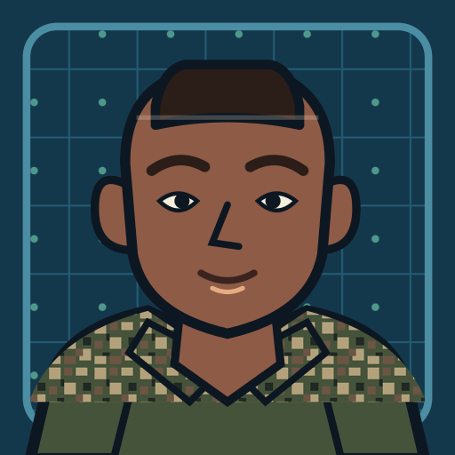

T
T
2008–2013
United States Marine Corps
Flightline IT Helpdesk. More than 4,000 users, mission-critical systems, server policy, and a major OS migration run in garrison and in deployed environments.
Veteran-made software · Texas
I’m Jerry, in Texas. Ex-Marine: flightline IT for more than 4,000 users, then years across HP, Toyota and more. Jerbot (say it “jer-BUT”) is what I build when nobody’s handing me a ticket.
The work

2008–2013
Flightline IT Helpdesk. More than 4,000 users, mission-critical systems, server policy, and a major OS migration run in garrison and in deployed environments.
2014–2026
HP Inc., Energy XXI, Becton Dickinson, Toyota Motor Manufacturing, and Academy Sports & Outdoors, through Cognizant.
At HP, I contributed to operating systems NASA used on Apple and Windows machines. Around 2014, on the NASA ACES contract, NASA leadership asked us to build a tool that could predict and mitigate IT problems on the fly. We laughed. Look where we are now.
Now
Years of real systems work, pointed at software of my own. Rug Pulled! is playable in a browser: test your skills without testing your wallet. More is on the way.
Background
Founder — Jerbot. Texas.
Tactical Information Specialist, Aviation Information Specialist School (2008).
Texas Veterans Commission verification is in progress.
Official mark reservedContact
For product feedback or a project conversation, write to hello@jerbot.dev.